컴퓨터그래픽스운용기능사 (2011-07-31 기출문제)
1과목: 산업디자인 일반
1. 디자인과 건축분야에서 "형태는 기능을 따른다."라고 기능미를 주장한 사람은?
- 루이스 설리반
- 프랭크 로이드 라이트
- 월리엄 모리스
- 월터 그로피우스
(정답률: 75%)

2. 다음 중 실용성과 조형성이 융합된 아름다움을 의미하는 용어는?
- 기능미
- 재질미
- 구성미
- 양식미
(정답률: 75%)
3. 기계, 건축, 선박 등에 있어서 큰 축척으로 그려졌을 경우, 그 밑부분의 축척을 확대하여 모양과 치수, 기구 등을 분명히 하기 위한 도면의 종류는?
- 평면도
- 입면도
- 상세도
- 단면도
(정답률: 78%)
4. 매슬로우(Maslow)의 인간욕구 5단계 중 사회적 욕구에 해당되는 것은?
- 지위, 권위, 명예
- 애정, 집단에서의 소속
- 질서, 보호
- 음식, 성, 생존
(정답률: 57%)
5. 원시인들이 사용하였던 흙의 사용 용도로 볼 수 없는 것은
- 집을 짓는 재료
- 수렵용 도구
- 물을 담는 용기
- 종교적인 토우
(정답률: 79%)
6. 다음 중 조명기구의 역할과 가장 거리가 먼 것은?
- 수면효과
- 장식성
- 배광 수단
- 전구의 보호
(정답률: 61%)
7. 같은 길이와 같은 크기지만 주변의 영향으로 다르게 보이는 착시는?
- 분할의 착시
- 대비의 착시
- 각도의 착시
- 방향의 착시
(정답률: 71%)
8. 잡지광고의 특성과 가장 거리가 먼 것은?
- 특정한 독자층을 갖는다.
- 매체로서의 생명이 짧다.
- 대부분 월간지 형태로 출간된다.
- 감정적 광고나 무드광고를 하는데 적당하다.
(정답률: 72%)
9. 광고디자인에서 "친절하고 자세할수록" 가장 효과가 높은 표현적 요소는?
- 카피(Copy)
- 마케팅(Marketing)
- 레이아웃(Layout)
- 로고타입(LogoType)
(정답률: 48%)
10. 우리가 직접 지각하여 얻는 형태이며 순수형태와 구별되는 것으로, 자연형태와 인위형태를 포함하는 형태는?
- 이념적 형태
- 상대적 형태
- 절대적 형태
- 현실적 형태
(정답률: 61%)
11. 시각디자인의 조건 중 독창성에 관한 설명으로 가장 적합한 것은?
- 있는 것을 그대로 반복한다던지 남의 작품을 모방한다던지 하는 것은 바람직한 태도가 아니다.
- 옛것과 새로운 것은 밀접한 연관성이 없어 새로운 효과를 기대할 수 없다.
- 이상한 표현으로 충격을 주는 디자인은 독창적인 올바른 자세라고 할 수 있다.
- 자연이나 인위적으로 만들어 놓은 원형의 평범함 속에 독창성은 있을 수 없다.
(정답률: 74%)
12. 면의 특징에 관한 설명 중 틀린 것은?
- 점의 확대, 폭의 확대 등에 의해 성립된다.
- 이동하는 선의 자취가 면을 이룬다.
- 길이와 너비, 넓이는 있으나 두께는 없다.
- 삼각형, 사각형, 원형 등을 무정형이라 한다.
(정답률: 72%)
13. 디자이너가 즉흥적으로 떠오르는 여러 가지 생각을 메모하기 위한 최초의 스케치는?
- 스크레치 스케치
- 러프 스케치
- 스타일 스케치
- 컨셉 스케치
(정답률: 80%)
14. 다음 중 신제품 전략의 주요 결정요소가 아닌 것은?
- 자사(Corporate)
- 경쟁사(Competitors)
- 고객(Customers)
- 수집(Collection)
(정답률: 57%)
15. 다음 중 실내디자인의 목표와 거리가 먼 것은?
- 효율성
- 폐쇄성
- 경제성
- 심미성
(정답률: 81%)
16. 다음 중 기업의 통일된 목표나 방향, 역할을 대.내외에 전달하는 기업의 이미지 통합(CIP)의 주요 요소가 아닌 것은?
- 행동양식의 통일성(behavior identity)
- 정신적 통일성(mind identity)
- 시각적 통일성(visual identity)
- 시장의 통일성(market identity)
(정답률: 61%)
17. 문자 상으로는 개념, 생각하는 방법이라는 의미이며, 디자인 행위의 초기단계로서 대상의 테마와 개념의 구성을 말하는 것은?
- 모델링(Modeling)
- 분석(Analysis)
- 컨셉트(Concept)
- 프리젠테이션(Presentation)
(정답률: 81%)
18. 패키지에서 지기를 만들 때 접거나 개봉하기 쉽도록 종이를 잘라내고 접는 선을 미리 눌러 놓는 과정은?
- 앰보싱(Embossing)
- 라미네이팅(Laminating)
- 합지(Carrying)
- 톰슨(Thomson)
(정답률: 41%)
19. 인쇄물과 함께 동봉되는 단추, 열쇠, 자동차 모형 등과 같은 입체물로, 메시지에 주의를 끌게 하기 위한 우편광고(DM: direct mail)의 형태는?
- 폴더(Folder)
- 리플릿(Leaflet)
- 세일즈 레터(Sales Letter)
- 레터 가젯(Letter Gadget)
(정답률: 54%)
20. 다음 중 제품을 구성하는 기본 인자들과 가장 관련이 없는 것은?
- 구조
- 재료
- 특허
- 형태
(정답률: 89%)
2과목: 색채 및 도법
21. 다음 도면 중 A가 가리키는 선의 명칭은?
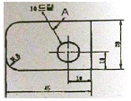
- 숨은선
- 외형선
- 지시선
- 파단선
(정답률: 80%)
22. 다음 중 투시도법의 용어 중 DVP는?
- 평화면
- 대각소점
- 정점
- 시심
(정답률: 80%)
23. 색에 대한 설명이 틀린 것은?
- 표면에서 반사된 빛은 우리 눈에서 색으로 느껴진다.
- 무지개는 빛의 산란에 의해 나타나는 현상이다.
- 가장 긴 파장은 빨강색 영역이고 가장 짧은 파장의 영역은 보라색 영역이다.
- 우리는 하늘을 볼 때 평면색(면색)을 느낀다.
(정답률: 51%)
24. 오스트발트 색체계에 대한 설명이 옳은 것은?
- Yellow의 보색은 Turquoise이다.
- 색상번호-흑색량-백색량의 순서로 색을 표기한다.
- 어떤 색의 보색은 반드시 그 색의 10째 번에 있다.
- 색상환은 헤링의 4원색설을 기본으로 한다.
(정답률: 61%)
25. 인간의 눈 구조 중 시신경 섬유가 나가는 부분으로 광수용기가 없기 때문에 상을 볼 수 없는 곳은?
- 망막(retina)
- 중심와(fovea)
- 수정체(lens)
- 맹점(blind spot)
(정답률: 57%)
26. 다음의 반단면도 중 도면작도법상 선의 용도가 바르게 작도된 도면은?
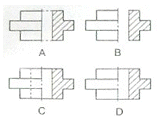
- A
- B
- C
- D
(정답률: 44%)
27. 먼셀 색체계에 대한 설명이 틀린 것은?
- 색상기호 R, YR은 난색계열이다.
- V값은 명도를 나타낸다.
- C값은 채도를 나타낸다.
- 무채색은 H로 표시한다.
(정답률: 79%)
28. 색광의 3원색을 비슷한 밝기로 모두 혼합하면 어떤 색광이 되는가?
- 검정
- 청록
- 노랑
- 흰색
(정답률: 80%)
29. 다음 평면도법 중 "같은 면적 그리기"가 아닌 것은?
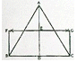
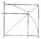
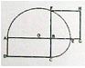
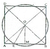
(정답률: 61%)
30. 투시도의 종류에 해당되지 않는 것은?
- 평행투시도
- 투상투시도
- 사각투시도
- 유각투시도
(정답률: 57%)
31. 그림과 같이 투상면이 눈과 물체의 사이에 있어 유리상자 안에 물체를 놓고 밖에서 스쳐보는 상태에서 투상하는 방법은?
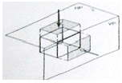
- 제1각법
- 제2각법
- 제3각법
- 제4각법
(정답률: 69%)
32. 빨간색과 노란색을 감산혼합을 했을 때의 색은?
- 녹색
- 파랑
- 주황
- 보라
(정답률: 80%)
33. 다음 평면도법 중 각을 등분하는 것이 아닌 것은?
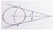
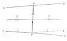
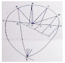
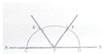
(정답률: 41%)
34. 다음 중 멀리서 달려오는 자동차를 가장 쉽게 식별 할 수 있는 자동차의 색은?
- 회색
- 청록색
- 노란색
- 파란색
(정답률: 77%)
35. 색채조화에 대한 연구 학자가 아닌 사람은?
- 레오나드로 다빈치
- 뉴턴
- 오스트발트
- 렌쯔
(정답률: 67%)
36. 빨강 바탕의 노란 줄무늬 와이셔츠는 원래의 빨강보다 노란빛을 띈다. 이와 관련이 있는 현상은?
- 동화효과
- 색상대비
- 계시혼색
- 연변대비
(정답률: 45%)
37. 색의 3속성에서 강약이나 맑기를 의미하는 것은?
- 명도
- 채도
- 색상
- 색입체
(정답률: 75%)
38. 명도와 관련된 느낌이 옳게 연결된 것은?
- 고명도-가벼운 느낌-팽창의 느낌
- 고명도-무거운 느낌-진출의 느낌
- 저명도-가벼운 느낌-수축의 느낌
- 저명도-무거운 느낌-팽창의 느낌
(정답률: 70%)
39. 사투상도에서 물체의 경사면 길이를 정면과 다르게 하여 물체가 실감이 나도록 하기 위한 경사면 길이 비율로 적합하지 않은 것은?
- 1 : 1
- 1 : 1/2
- 1 : 3/4
- 1 : 4/5
(정답률: 42%)
40. 색의 온도감에 관한 설명으로 틀린 것은?
- 장파장의색이 따뜻하게 느껴진다.
- 명도가 낮을수록 차갑게 느껴진다.
- 색의 속성 중에서 주로 색상의 영향을 받는다.
- 때로는 차갑게 때로는 따뜻하게 느껴지는 색을 중성색이라고 한다.
(정답률: 46%)
3과목: 디자인 재료
41. 양지 제조 공정 중 "고해"에 해당되는 것은?
- 긴 섬유를 알맞게 절단
- 번짐 방지를 위한 눈메움
- 발색 작업
- 탈수 및 건조
(정답률: 54%)
42. 플라스틱이 가지고 있는 일반적인 장점이 아닌 것은?
- 전기 절연성이 우수하다.
- 내수성이 좋고 재료의 부식이 없다.
- 열팽창 계수가 작아 치수 안정성이 좋다.
- 착색 및 가공이 용이하다.
(정답률: 63%)
43. 다음과 같은 특성을 지는 채색 재료는?
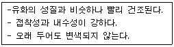
- 아크릴 물감
- 수채 물감
- 포스터 칼라
- 마커
(정답률: 73%)
44. 인쇄용지의 상질지란?
- 그라운드+화학펄프로 만들어진다.
- 화학펄프+쇄목펄프로 만들어진다.
- 화학펄프만으로 만들어진다.
- 아황산펄프로 만들어진다.
(정답률: 42%)
45. 다음 중 목재용 도료가 구비해야 할 성능이 아닌 것은?
- 강인한 도막을 형성할 수 있어야 한다.
- 부착성이 좋아야 한다.
- 도막의 경도가 높아야 한다.
- 흡수성이 좋아야 한다.
(정답률: 58%)
46. 유리의 광학적 성질이 아닌 것은?
- 점성
- 굴절
- 분산
- 투과
(정답률: 80%)
47. 종이를 일정한길이만큼 찢는데 필요한 에너지를 알기 위해 측정하는 것은?
- 파열강도
- 인열강도
- 내절강도
- 인장강도
(정답률: 38%)
48. 다음 중 가장 감도가 높은 필름은?
- ASA 50
- ASA 100
- ASA 400
- ASA 1000
(정답률: 76%)
4과목: 컴퓨터 그래픽스
49. 다음 중 평면적인 모델에 3차원적인 입체감을 주기 위해 빛의 변화 등을 계산하여 채색해 나가는 렌더링 기법이 아닌 것은?
- 라디오시티(Radiosity) 방식
- 모핑(Morphing)방식
- 레이 캐스팅(Ray Casting) 방식
- 레이 트레이싱(Ray Tracing) 방식
(정답률: 51%)
50. 3차원 모델링 요소 중에서 스플라인(spline) 곡선에 대한 설명으로 틀린 것은?
- 소수의 점을 가지고도 매우 복잡한 표면을 정의할 수 있다.
- 복잡한 형상을 폴리곤 모델러(Polygon Modeler)보다 훨씬 수월하게 애니메이션 할 수 있다.
- 곡선으로 이루어져 있어 유기체 모델링에 적합하다.
- 렌더링 시간을 줄여줘 게임 제작에 유용한 모델 방식이다.
(정답률: 49%)
51. 이미지 데이터사이즈(용량)를 변화시키는 방법과 가장거리가 먼 것은?
- Mode의 전환
- 선택(Select)의 전환
- 해상도(Resolution)의 조정
- 이미지의가로, 세로 크기 조정
(정답률: 70%)
52. 2D그래픽 처리 프로그램에서 이미지의 합성, 변화 등의 과정을 통해 처리하는 작업을 뜻하는 용어는?
- 클리핑
- 이미지 프로세싱
- 모션캡쳐
- 스캐닝
(정답률: 74%)
53. 다음 중 이미지의 콘트라스트를 높이고 이미지의 초점을 또렷하게 하는 기능을 가진 포토샵 필터는?
- Blur
- Sharpen
- Noise
- Pixelate
(정답률: 61%)
54. 소비전력이 작고 전원이 꺼지더라고 저장된 정보가 유지되며, 작고 가벼워 이동성이 편리한 메모리는?
- ROM
- 플래시 메모리
- RAM
- 캐시 메모리
(정답률: 50%)
55. spot color(별색)에 대한 설명이 틀린 것은?
- 배합해서 색을 나타내지 않고 개별적인 색을 사용한다.
- 반짝이는 금색, 은색과 같은 색상을 인쇄할 때 주로 지정한다.
- CMYK를 4색 분해하여 망점을 섞어 표현한다.
- 인쇄 시 spot color에 해당하는 컬러판이 추가로 필요하다.
(정답률: 58%)
56. 어느 한 방향으로만 빛을 보낼 수 있어 대상을 부각시키기 위한 극적인 효과를 주는 특징이 있고 자동차의 헤드라이트, 랜턴의 빛과 같은 효과를 낼 수 있는 조명은?
- Omni Light
- Spot Light
- Ambient Light
- Directional Light
(정답률: 78%)
57. 1975년 빌게이츠와 폴알렌이 설립한 소프트웨어 제작 회사는?
- 마이크로소프트사
- Apple사
- 휴렛팩커드
- IBM
(정답률: 85%)
58. 동영상 데이터의 표현과 관련한 코덱에 대한 설명이 틀린 것은?
- 코덱이란 코더(coder)와 디코더(decoder)의 기능을 갖는다.
- 코덱이란 압출(compression)과 해제(decompression)의 약자이다.
- 코덱이 없어도 음악이나 영상을 컴퓨터가 재생할 수 있다.
- 코덱은 디지털 동영상 데이터를 불러들여 읽는 것을 돕는다.
(정답률: 77%)
59. 2D 그래픽 응용프로그램에서 패널(Panel)을 활성화 시킬 수 있는 명령은 어느 메뉴에 있는가?
- File 메뉴
- Edit 메뉴
- View 메뉴
- Window 메뉴
(정답률: 60%)
60. 일러스트레이터 프로그램에서 타입(Type)툴을 사용하여 입력한 문자들을 도형으로 전환하여 변형하고자 할 때 사용하는 기능은?
- Adjust Colors
- Make Wrap
- Desaturate
- Create outline
(정답률: 67%)